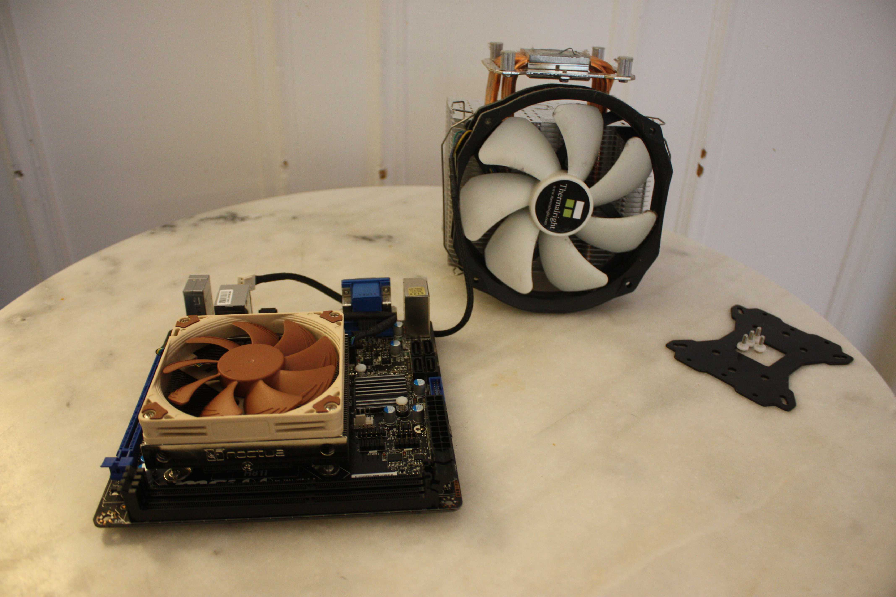

Home / Blog
Last update : 4 April 2021
I have a Linux box running at home for various reasons : performing long-running compilations, toying with new open source projects, self host some services and more broadly just experiment !
Back in 2013, using my first (intern) paycheck, I decided to build a mid-end gaming PC. It's not a beast, but makes a perfect linux box (check out the specs below).
There's just one problem : it's incredibly BULKY ...
The absolute unit of a case. I live in a small Parisian flat, with a small living room, I think it's safe to say that the case STANDS OUT (apple for scale)
This is why I was so excited when I stumbled upon a very interesting sub-reddit called SFFPC, as in Small Form F PC.
Going against the tide of having the biggest, most obnoxiously RGB-lit, and water-cooled case : Those folks are trying to squeeze in spec'ed out PC in ridiculously small cases.
This felt like a revelation : I need to strip my PC down of all its bulky and irrelevant components, to make it as small as possible, while preserving its performance !
I set out to tackle this project with a few principles in mind :
➡️ That meant reusing my CPU, RAM, HDD, as much as possible.
➡️ We're already producing so much e-waste, I'm trying to minimize my contribution here ...
➡️ The total cost of the operation should not exceed 300 euros.
With these constraints in mind, it was time to fire up Leboncoin and eBay and go on a hunt for used pieces !
The first step was to find a motherboard that has a way smaller form factor than my old one, and that allows me to re-use my CPU & RAM.
I previously heard about small form factors for motherboards like Micro-ATX, Mini-ITX, and even Nano-ITX, but never even considered them !
I decided to go for a Mini-ITX motherboard and was surprised to see how the offering for such cards is much more developed than a few years ago.
I settled for a used MSI H81I that I found on eBay.
A before/after picture : We're going small form factor baby!
This motherboard is roughly equivalent to the one I had that I underutilized, compatible with my CPU and my RAM, and is just incredibly smaller !
The first objective was thus completed !
✅ Re-using my current hardware at maximum
Then, the hardest part came : Picking a discreet, and compact case ...
My requirements were tough : In addition to being small and discreet, the case should be in the living room, sitting on the lowest shelf of my bookshelf, next to my router ...
I started hunting for cases, and found out that there's many, many manufacturers that offer small form factor cases : ranging from low cost ones, to high-end produced in limited quantity ones ... There's even people that 3D-print their own cases !
There's this incredible spreadsheet, painstakingly put together by redditors, that allows you to search for a case using size-related filters : It's useful, but felt a bit overwhelming.
My main problem with all these cases, was their height ... Every case I found was too high for the space between my shelves ...
Fortunately, I stumbled HTPC format cases, which are designed to have a similar form factor as your set top box / Blu-Ray player. In this category, as soon as I found out about the Silverstone ML09B, it was an instant crush !
I mean, look !
It ticked all the criteria, and I find it stunning !
The only issue is that I couldn't (or maybe was not patient enough) find a used version of the case, and had to buy it brand new.
I then scoured leboncoin and found a used SFX PSU with a low profile CPU cooler on the cheap ! Here is a small table that recaps all the parts I bought, whether they are used or not, alongside with their price.
❌ Buying second hand as most as possible
| Used | Price | Details | |
|---|---|---|---|
| Motherboard | ✅ | 79€ | MSI H81I |
| PSU | ✅ | 80€ | Corsair SFX SF450 Platinum |
| Case | ❌ | 62€ | Silverstone ML09B |
| Low profile CPU cooler | ✅ | 20€ | Noctua NH-L9i |
✅ Doing this on a tight budget, and don't exceed 300 euros
It was then time for the build !
From bulky (what a ridiculously sized cooler) ...
... to very compact!
I expected to struggle a lot more trying to fit every component in such a tiny box : My concerns were not founded as the build went smooth, and that I don't have to fit a GPU in my case!
The completed build ! Isn't it a beauty ?!
The build, in its natural habitat. It's a snug fit!
Overall, I'm pretty proud of this build : It's discreet, the form factor is perfect, and I think it looks very good !
One great surprise is that it's also super silent ! Thanks to the Zero-RPM of the PSU alongside with the very silent Noctua NH-l9i CPU cooler, the result is a barely audible hum made by the fans when the CPU load is important.
The downside of this build might be that the overall temperature is higher (in the case and for the CPU). But it's a price I'm totally willing to pay for the space it saves me !
Until next time !